FLYERS
| Photo |
Name |
Number |
Position |
Shot |
Height |
Weight |
Birthday |
Hometown |
| 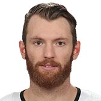 |
Sean Couturier |
14 |
C |
L |
6' 3" |
211 |
Dec 7, 1992 |
Phoenix, AZ, USA |
| 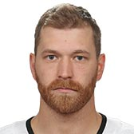 |
Claude Giroux |
28 |
C |
R |
5' 11" |
185 |
Jan 12, 1988 |
Hearst, ON, CAN |
|
Corban Knight |
10 |
C |
R |
6' 2" |
195 |
Sep 10, 1990 |
Oliver, BC, CAN |
| 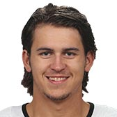 |
Travis Konecny |
11 |
C |
R |
5' 10" |
175 |
Mar 11, 1997 |
London, ON, CAN |
| 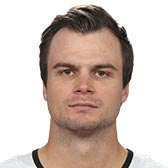 |
Scott Laughton |
21 |
C |
L |
6' 1" |
190 |
May 30, 1994 |
Oakville, ON, CAN |
|
Jori Lehtera |
15 |
C |
L |
6' 2" |
212 |
Dec 23, 1987 |
Helsinki, FIN |
| 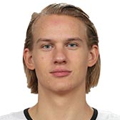 |
Oskar Lindblom |
23 |
LW |
L |
6' 1" |
191 |
Aug 15, 1996 |
Gävle, SWE |
| 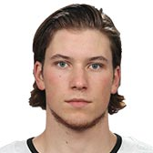 |
Nolan Patrick |
19 |
C |
R |
6' 2" |
198 |
Sep 19, 1998 |
Winnipeg, MB, CAN |
|
Michael Raffl |
12 |
LW |
L |
6' 0" |
200 |
Dec 1, 1988 |
Villach, AUT |
| 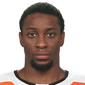 |
Wayne Simmonds |
17 |
RW |
R |
6' 2" |
185 |
Aug 26, 1988 |
Scarborough, ON, CAN |
|
James van Riemsdyk |
25 |
LW |
L |
6' 3" |
217 |
May 4, 1989 |
Middletown, NJ, USA |
| 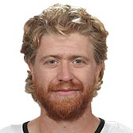 |
Jakub Voracek |
93 |
RW |
L |
6' 2" |
214 |
Aug 15, 1989 |
Kladno, CZE |
| 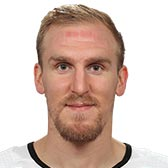 |
Dale Weise |
22 |
RW |
R |
6' 2" |
206 |
Aug 5, 1988 |
Winnipeg, MB, CAN |
| Photo |
Name |
Number |
Shot |
Height |
Weight |
Birthday |
Hometown |
| 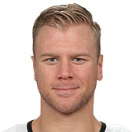 |
Christian Folin |
26 |
R |
6' 3" |
204 |
Feb 9, 1991 |
Gothenburg, SWE |
| 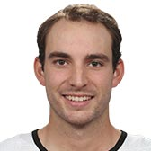 |
Shayne Gostisbehere |
53 |
L |
5' 11" |
180 |
Apr 20, 1993 |
Pembroke Pines, FL, USA |
| 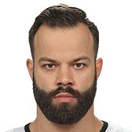 |
Radko Gudas |
3 |
R |
6' 0" |
204 |
Jun 5, 1990 |
Prague, CZE |
| 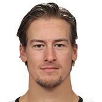 |
Robert Hagg |
8 |
L |
6' 2" |
204 |
Feb 8, 1995 |
Uppsala, SWE |
|
Andrew MacDonald |
47 |
L |
6' 1" |
204 |
Sep 7, 1986 |
Judique, NS, CAN |
| 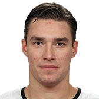 |
Ivan Provorov |
9 |
L |
6' 1" |
201 |
Jan 13, 1997 |
Yaroslavl, RUS |
| 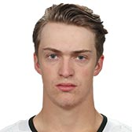 |
Travis Sanheim |
6 |
L |
6' 3" |
181 |
Mar 29, 1996 |
Elkhorn, MB, CAN |
| Photo |
Name |
Number |
Height |
Weight |
Birthday |
Hometown |
| 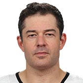 |
Brian Elliott |
37 |
6' 2" |
209 |
Apr 9, 1985 |
Newmarket, ON, CAN |
| 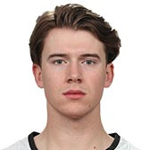 |
Carter Hart |
79 |
6' 2" |
181 |
Aug 13, 1998 |
Sherwood Park, ON, CAN |
|
Mike McKenna |
56 |
6' 2" |
183 |
Apr 11, 1983 |
St. Louis, MO, USA |
| 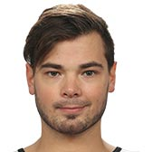 |
Michal Neuvirth |
30 |
6' 1" |
209 |
Mar 23, 1988 |
Ústí nad Labem, CZE |
| 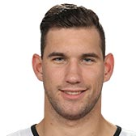 |
Anthony Stolarz |
41 |
6' 6" |
210 |
Jan 20, 1994 |
Edison, NJ, USA |